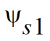
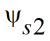

56
LUTSOI Model
LUTSOI is a compact model dedicated to Fully-Depleted on Silicon-On-Insulator (FDSOI) technologies with low-doped channel. For more information, please refer to lutsoi model manual or contact info@cadence.com.
Model parameter "version" only accepts real number value, like 102.40 for version=102.4.0. The available versions are 102.40(102.4.0), 102.50(102.5.0), 102.60(102.6.0) and, 102.70(102.7.0).
This device is supported within altergroups.
The following figures illustrated the device architecture of this model.
It is a schematic cross-section of a FDSOI transistor, describing the characteristic thicknesses and the surface potentials at the front ( ) and back ( ) interfaces.
This chapter contains the following information about the LUTSOI model:
- Model Structure
- Version Update and Enhancements
- Geometrical dependences, stress effects and junction asymmetry
- Model Equations
- Component Statements
Return to top